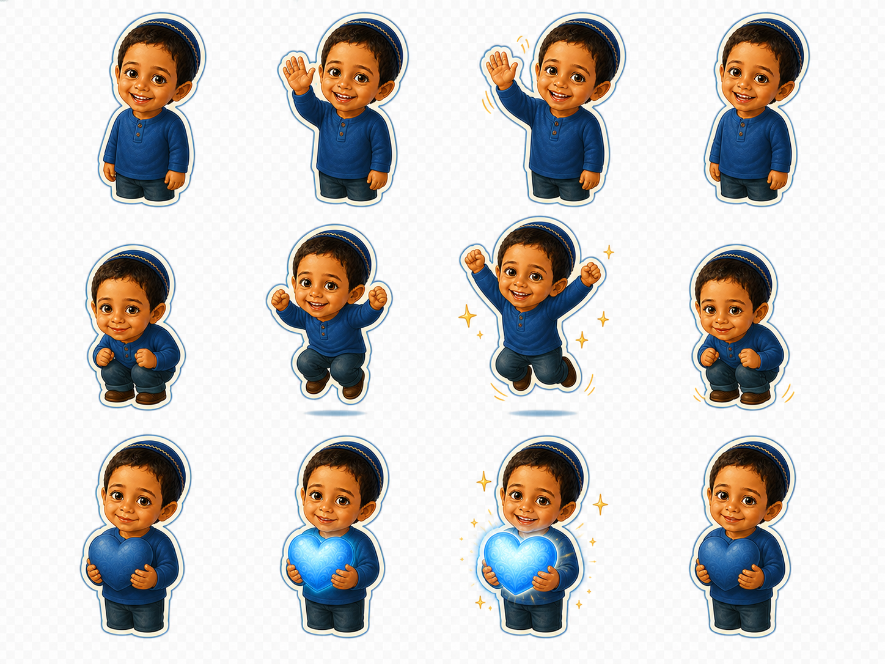
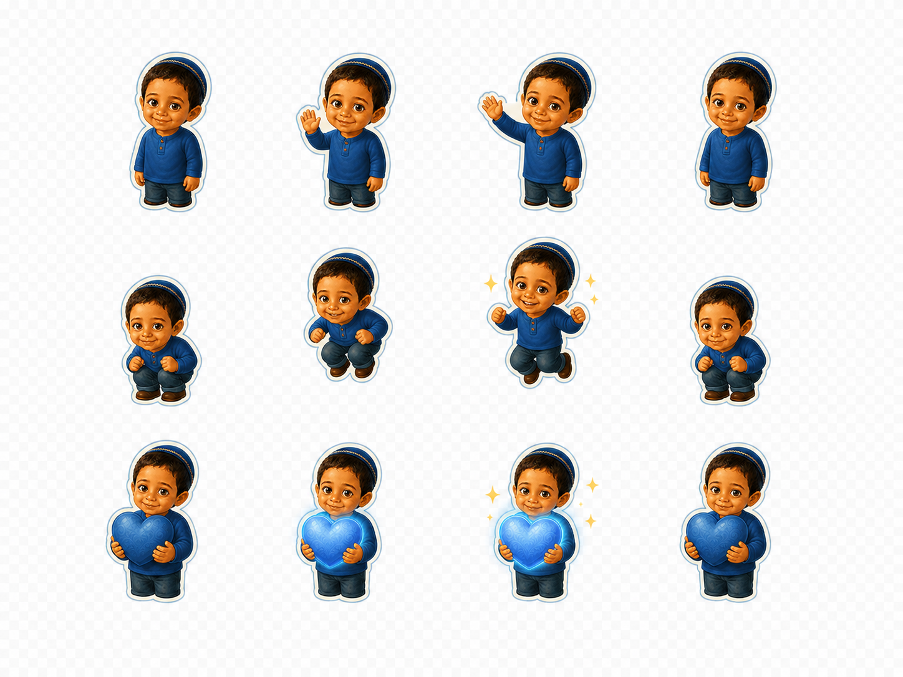
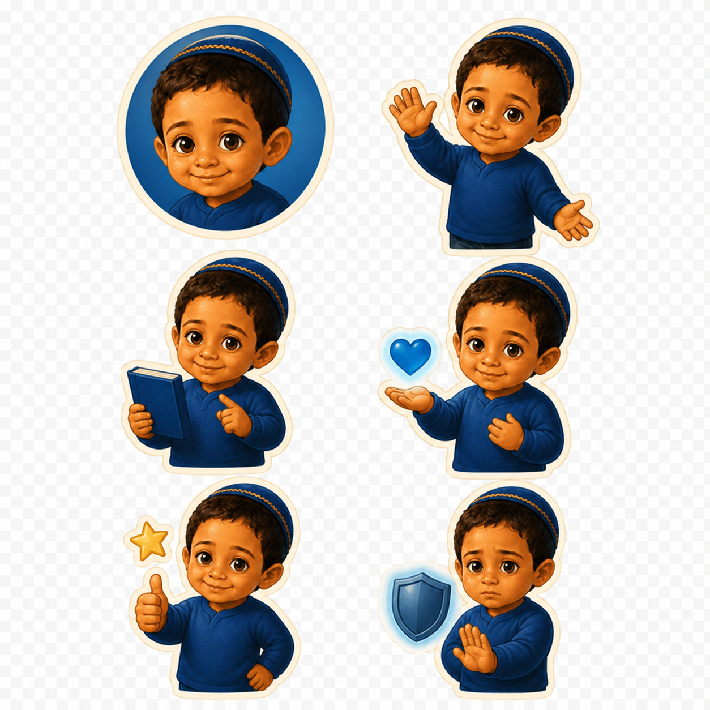
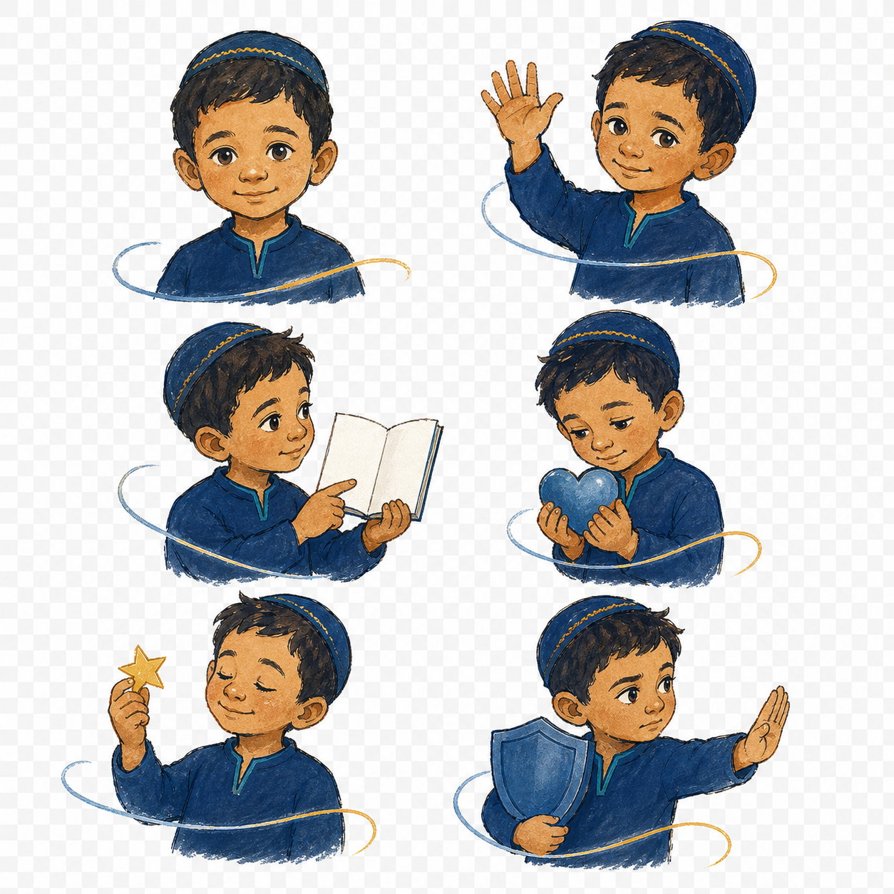
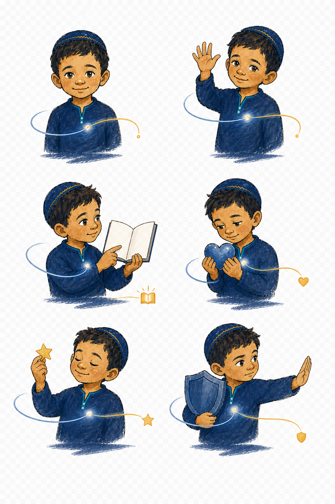
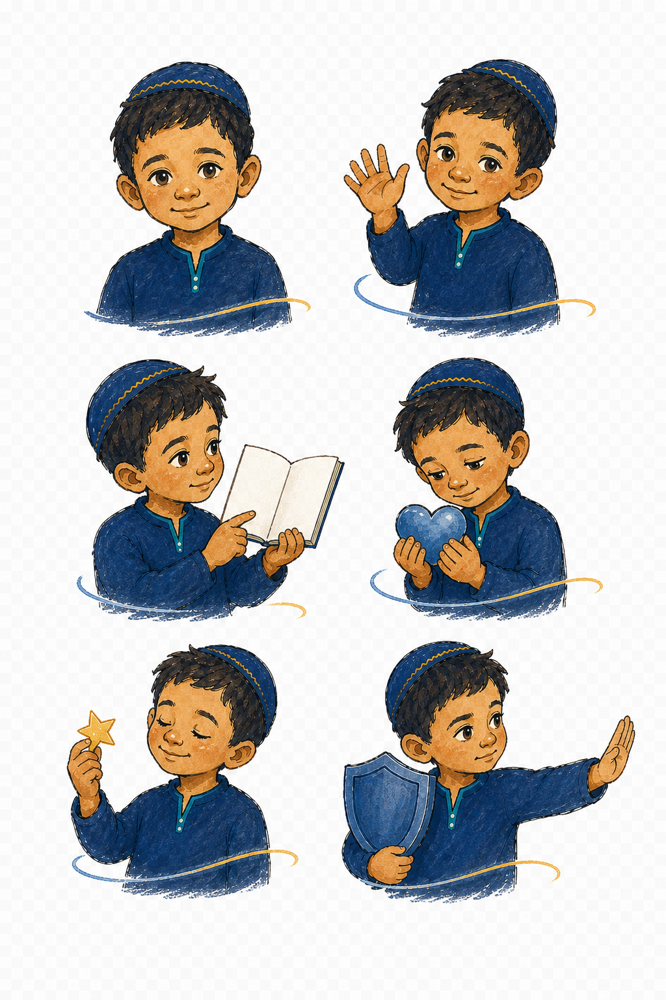

original-expression-sheet.png
גיליון ראשוני של 25 ביטויים וסמלים מקוריים.
- מועד מקור
- יום שלישי, 25 באוגוסט 2026 בשעה 0:35:38
- SHA-256
d9a508a39085c770d05fdbafbb66b8eeee6373faba1c09fad0bd661f91cff7c5
תיעוד כרונולוגי של פיתוח דמות מדריך בתשובה, המדבקות והאנימציות.
צילום המקור הפרטי אינו מוצג בדף זה.
נאסף: יום שלישי, 25 באוגוסט 2026 בשעה 15:27:04 GMT+3
גיבוב שורש SHA-256:
כל קובץ מתועד עם זמן מערכת וגיבוב SHA-256. שינוי של בית אחד בקובץ ייצור גיבוב שונה. התיעוד אינו מחליף חותמת זמן מוסמכת או ייעוץ משפטי.
מחקר חזותי מוקדם של סמיילים וסמלים יהודיים לפני בחירת דמות המותג.
גיליון ראשוני של 25 ביטויים וסמלים מקוריים.
d9a508a39085c770d05fdbafbb66b8eeee6373faba1c09fad0bd661f91cff7c5הפיכת צילום מקורי שסיפקה וצילמה בעלת המיזם לדמות מאוירת ראשונה.
גיליון תשע הבעות ראשון שנוצר בהשראת צילום הילד.
3ab52512a4a924dc08cdd80e45484b20fba95c5a19c0122623ecaa77adfc1dcfפיתוח הדמות למדבקות לבבות, ידיים, שבת, חגים וברכות חזותיות.
לבבות וסימוני ידיים.
f9ce3296ab948da7d475c8e19880b555e7c28fb34c6011951e8efabeff05d27fשבת והבדלה.
e0c0185bcd4ade4a091000ffc6d8903536a27ad8296b72b9db8407f06cfef013חגים ומועדי ישראל.
2e582ecef2b46d9d76157ec84b70e740f71b2313cbda4f050a104005d1e2ab1fברכות, עידוד ורגשות.
7c9d96f3bd95ad21f694de004c733732a2411d46705ee77e626e173ca0cf43d5אפשרויות הבעה ללא ילד ולצדן ניסוי טיפוגרפי של ברכות בעברית.
רגשות ניטרליים, לב, ידיים וכוכב.
3452d10ee388522a66e2d52e6f78bbec25b2129ceb6e87dcc04866d4909b3315טיוטת כיוון לברכות מילוליות בעברית.
a7e11cbd501f78eba84b8e83398d08af0b76e0ad9945a27efe1d318f2055620cלוחות פריימים והמחשות מונפשות עדינות בפורמטי WebP ו-GIF.

לוח פריימים ראשון.
0d51bf494bed73adead0e2b24beece798abe2c9e013266810f15b1244f93b4f9
לוח פריימים מתוקן עם שוליים.
bbfbdb4d1f2d071cbb51a5749a72778cc6652db199f3252c765300257947273eנפנוף עדין – WebP מונפש.
40b70a3859b02e926e9eb523f278a28fccd3dd8972639dbf7a21caeafe0b34aeנפנוף עדין – GIF.
e187ec5f8ac1b26a810bad55510a5e1b9d08cc90bffb82d537e273725d914773קפיצה עדינה – WebP מונפש.
989b7d743f1b6680215fb91365d6dda28c4d98cb757d9cea5bffccd3d48ec109קפיצה עדינה – GIF.
4abb1fcc560d5f5925da7a7924563a8798feef4d26a283dae720d5a2b5e30dacלב פועם ומנצנץ – WebP מונפש.
4de268b4e2cf3f429ec57ca3d2b6e2f759c0a17f5ed7024167bec599b13c6738לב פועם ומנצנץ – GIF.
ae900daf3b08a66e457c2f0195e406378636ef2d910efeafeec691acbe531107המעבר מדמות תלת־ממדית כללית לשפת גואש ודיו מקורית ולזהות ישראל.

מחקר מדריך ראשוני בסגנון תלת־ממד.
13910c3beaeec9eae1b7c3ff22a43bd55e337fd27b287fab3a2594c598edda66
הכיוון המקורי בגואש ודיו וחוט כחול־זהוב.
b6dcadf42394e04a5df649aaf492fdccba385e6babca8e6cee130495cdb9b94f
מערכת חתימות חזותיות: חוט, תפרים וצל־שביל.
e2d0aee54d6d8678a79c0b61dc4e1d463f37c0bb0ffff4721c0d708648ab5cf2
עידון הדמות וחזרה למראה טבעי יותר.
27e5347309ee1575da5e31584655d5cc7bf7ae2e1606f2fbfec1d3f18a606113קובץ הפרופיל שהוכן מן האיור שנבחר וצורף על ידי בעלת המיזם.
ישראל מנופף, מותאם לתמונת פרופיל מרובעת.
250213dfd3bb986ecfdfb8db40c2a9d42b1826170db15b106abd5f2a34612549{kind=link}
{kind=link}
{kind=link}
{kind=link}
{kind=link}
{kind=link}
{kind=link}
{kind=link}
{kind=link}
{kind=link}
{kind=link}
{kind=link}
{kind=link}
{kind=link}
{kind=link}
{kind=link}
{kind=link}
{kind=link}
{kind=link}
{kind=link}
{kind=link}